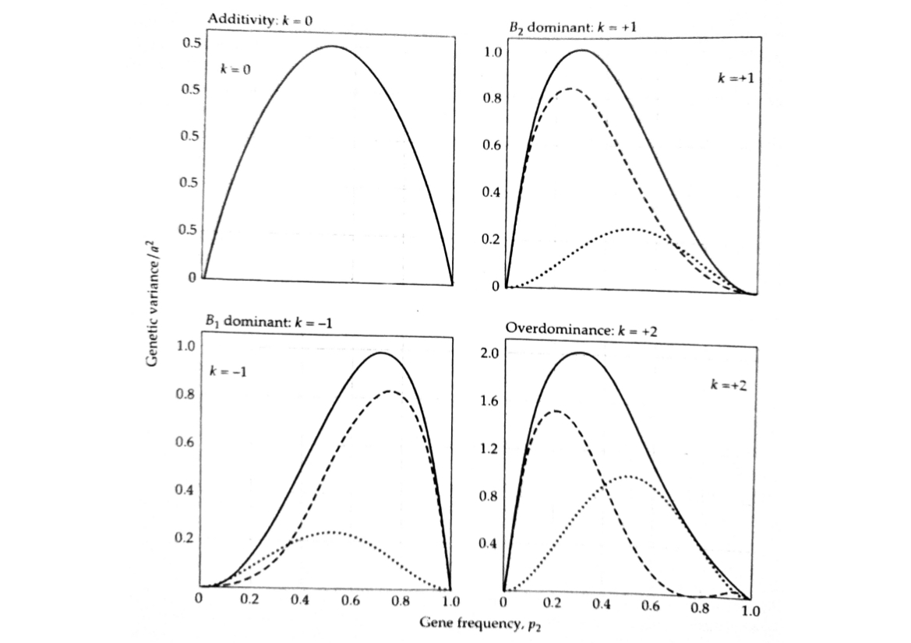

Quantitative Genetics
Decomposition of The Genetic Variance
Instructor: A Augusto F Garcia / Statistical Genetics Lab
Department of Genetics, Luiz de Queiroz College of Agriculture, University of São Paulo (Brazil)
Content
Influence of a locus on the phenotype
Fisher's decomposition of the genotypic value
Partitioning the genetic variance
Additive effects and breeding values
Extensions for multiple alleles
Influence of a locus on the phenotype
\[z = G + E\]
- \(G\) is for the whole genotype (which is very complicated)
- Let us start with a single gene

- \(k\) is the dominance
- \(k=0\) (no dominance), \(k=1\) (full dominance), \(k\geq 1\) (overdominance)
Fisher's decomposition (1918)
- Number of copies of a particular allele: gene content
- Relation between gene content and genotypic value (normally, non-linear)
- Partitioning genotypic values into their "expected" values based on additivity (\(\hat{G}\)) and deviations from those expectations
- Deviations: dominance (\(\delta\))
Regression model
\[G_{ij}=\hat{G}_{ij}+\delta_{ij}=\mu_G+\alpha_1N_1+\alpha_2N_2+\delta_{ij}\]
- This is a multiple regression model
- However, there is a constraint: \(N_1=2-N_2\) \[G_{ij}=\mu_{G}+\alpha_1(2-N_2)+\alpha_2N_2+\delta_{ij}\] \[G_{ij}=\iota + (\alpha_2-\alpha_1)N_2 + \delta_{ij}\]
- Where \(\iota=\mu_G+2\alpha_1\)
- The slope of this regression can be denoted as \(\alpha=\alpha_2-\alpha_1\)
- The (regression )model is therefore \[G_{ij}=\iota+\alpha N_2 + \delta_{ij}\]
Graphical interpretation

- Notice that \[\hat{G}_{ij}=\mu_{G}+\alpha_{i}+\alpha_{j} = \left\{ \begin{array}{lr} \mu_G+2\alpha_1 & for\; G_{11}\\ \mu_G+\alpha_1+\alpha_2 & for\; G_{21}\\ \mu_G+2\alpha_2 & for\; G_{22}\end{array}\right.\]
- By taking the expectation of \(G_{ij}=\mu_G+\alpha_1N_1+\alpha_2N_2+\delta_{ij}\), it can be shown that \[\alpha_2=p_1\alpha\] \[\alpha_1=-p_2\alpha\]
- \(p_1\) (\(p_2\)) is the frequency of allele \(B_1\) (\(B_2\))
- The slope of the regression (graphical representation) is \[\alpha=\frac{\sigma(G,N_2)}{\sigma^2(N_2)}\]
- To obtain \(\alpha\), one needs to make a number of intermediate
calculations
- \(E(N_2)\) and \(E(N_2^2)\) for \(\sigma^2(N_2)\)
- \(E(GN)\), \(E(G)\) and \(E(N_2)\) for \(\sigma(G,N_2)\)
- Expectations require "values" and "frequencies"
Finally:
\[\alpha=a[1+k(p_1-p_2)]\]
- Average effect of allelic substitution (under random mating) \[\alpha=a[1+k(p_1-p_2)]\]
- It represents the average change in genotypic value that results
when a \(B_1\) allele is randomly substituted for a \(B_2\) allele
- If \(k=0\), \(\alpha=a\)
- If \(p_1=p_2\) (for example, in an \(F_2\) population), \(\alpha=a\)
- With dominance, the effect of an allelic substitution depends on the status of the unsubstituted allele
- The effect of an allele can only be defined in the context of a population
| Genotype | Genotypic Value (\(G\)) | Gene content (\(N_2\)) | Freq. | \(\hat{G}\) | \(\delta=G-\hat{G}\) |
|---|---|---|---|---|---|
| \(B_1B_1\) | \(0\) | \(0\) | \(p_1^2\) | \(\iota\) | \(-\iota\) |
| \(B_1B_2\) | \((1+k)a\) | \(1\) | \(2p_1p_2\) | \(\iota+\alpha\) | \((1+k)a-\iota-\alpha\) |
| \(B_2B_2\) | \(2a\) | \(2\) | \(p_2^2\) | \(\iota+2\alpha\) | \(2a-\iota-2\alpha\) |

Partitioning the genetic variance
- Given that \(G = \hat{G} + \delta\), the total genetic variance is \[\sigma_G^2=\sigma^2(\hat{G}+\delta)=\sigma^2(\hat{G})+2\sigma(\hat{G},\delta)+\sigma^2(\delta)\]
- Recall from regression properties that the predictor and the residual are uncorrelated (in this case, \(\hat{G}\) and \(\delta\))
- So, we can denote these components as
\[\sigma^2_G=\sigma^2_A+\sigma^2_D\]
- \(\sigma^2_A\) is the amount of variation explained by the regression on \(N_2\) (additive genetic variance)
- \(\sigma^2_D\) is the residual variance for the regression (dominance genetic variance)
Genetic variance
Using \(E(\hat{G}^2)\), \(E(\hat{G})\), \(E(\delta^2)\), \(E(\delta)\), we can obtain:
\[\sigma^2_A=E(\hat{G}^2)-[E(\hat{G})]^2=2p_1p_2\alpha^2\]
\[\sigma^2_D=E(\delta^2)-[E(\delta)]^2=(2p_1p_2ak)^2\]
- solid line is \(\sigma^2_G\), dashed line is \(\sigma^2_A\), dotted line is \(\sigma^2_D\)
- \(\sigma^2_A/\sigma^2_D\) does not provide information about additivity of gene action!

Additive effects and breeding values
- In randomly mating diploids, each parent donates only one allele per locus to its offspring
- Additive effects are for each allele
- Dominance deviations are functions of the interaction between the two parental alleles
- So, dominance is eliminated when gametes are produced
\(\hat{G}\) and \(\delta\) are the heritable and non-heritable components of an individual's genotypic value
Additive effects
- The additive effects \(\alpha_i\) are defined to be the least-squares regression coefficients of genotypic values on gene content: \[\alpha_2=p_1\alpha=p_1a[1+k(p_1-p_2)]\] \[\alpha_1=-p_2\alpha=-p_2a[1+k(p_1-p_2)]\]
- They are equivalent to what is defined as average excesses in random mating populations ("the difference between the mean genotypic value of individuals carrying at least one copy of a given allele and the mean genotypic value of the entire population")
Breeding value
An individual's breeding value (\(A\)) is the sum of the additive effects of its genes
- The breeding value of \(B_1B_1\) is \(2\alpha_1\)
- The breeding value of \(B_1B_2\) is \(\alpha_1+\alpha_2\)
- The breeding value of \(B_2B_2\) is \(2\alpha_2\)
Breeding value
- If one crosses individuals with a given breeding value with a random sample of the entire population, it is possible to estimate the average genotypic value of offspring. By subtracting the mean, we have a very useful result.
- Deviations are half of the breeding value
| Parental genotype | Breeding value | Mean genotypic value of progeny | Deviation of expected progeny mean from \(\mu_G\) |
|---|---|---|---|
| \(B_2B_2\) | \(2\alpha_2\) | \(p_2(2a)+p_1a(1+k)\) | \(\alpha_2\) |
| \(B_1B_2\) | \(\alpha_1+\alpha_2\) | \(a[p_2+(1+k)/2]\) | \((\alpha_1+\alpha_2)/2\) |
| \(B_1B_1\) | \(2\alpha_1\) | \(ap_2(1+k)\) | \(\alpha_1\) |
We can estimate the breeding value by crossing to random individuals, taking the average of progeny, subtracting it from the overall mean, and then multiplying by 2
A very useful interpretation
- Remember that \(G_{ij}=\mu_G+\alpha_i+\alpha_j+\delta_{ij}\)
- This is the same as using the model \(G_{ij}=\mu_G+\alpha_1N_1+\alpha_2N_2+\delta_{ij}\)
- \(G_{ij}=\mu_G+A_{ij}+\delta_{ij}\) (indicating the breeding value)
- Then \[\sigma^2_G=\sigma^2(\alpha_i+\alpha_j)+\sigma^2(\delta_{ij})\]
- But \[\sigma^2_G=\sigma^2_A+\sigma^2_D\]
The genetic variance is equivalent to the variance of breeding values of individuals in the population
Extension for multiple alleles
- Generalizations: \[G=\mu_G+\sum_{i=1}^n \alpha_iN_i+\delta\] \[\alpha_i=\sum_{j=1}^n p_jG_{ij}-\mu_G\] \[\sigma^2_A=2\sum_{i=1}^n p_i\alpha^2_i\]
Homework
- Read Chapter 4 of Lynch and Walsh Book